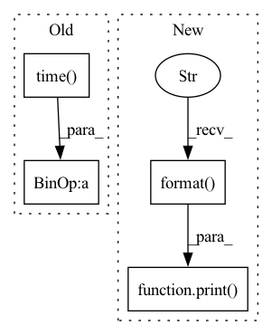

Pattern ID :16217
Before Change
end = time.time()
for i, (images, target) in enumerate(train_loader):
// measure data loading time
data_time.update(time.time() - end)
images = images.cuda(gpu, non_blocking=True)
target = target.cuda(gpu, non_blocking=True)After Change
end = time.time()
if i % args.print_freq == 0:
print( "Epoch: [{0}][{1}/{2}]\t"
"Time {batch_time.val:.3f} ({batch_time.avg:.3f})\t"
"Speed {3:.3f} ({4:.3f})\t"
"Loss {loss.val:.10f} ({loss.avg:.4f})\t"
"Prec@1 {top1.val:.3f} ({top1.avg:.3f})\t"
"Prec@5 {top5.val:.3f} ({top5.avg:.3f})".format(
epoch, i, len(train_loader),
args.world_size * args.batch_size * args.ngpus_per_node / batch_time.val,
args.world_size * args.batch_size * args.ngpus_per_node / batch_time.avg,
batch_time=batch_time,
loss=losses, top1=top1, top5=top5))
def validate(val_loader, model, criterion, gpu, args):
batch_time = AverageMeter()In pattern: SUPERPATTERN
Frequency: 4
Non-data size: 4
Instances Fragment ID: 54181994
Project Name: richardkxu/distributed-pytorch
Commit Name: b5d0793a1bac4df6a31ab0dd1959baee4ab12809
Time: 2020-02-06
Author: richardkxu@gmail.com
File Name: imagenet_ddp_mixprec.py
M Class Name: AnonimousClass
N Class Name: AnonimousClass
M Method Name: train(7)
N Method Name: train(7)
M Parent Class:
N Parent Class:
M File Name: imagenet_ddp_mixprec.py
N File Name: imagenet_ddp_mixprec.py
M Start Line: 257
M End Line: 306
N Start Line: 237
N End Line: 288
Before Change
v = 1e10
lamb = 1.0
tic = time.time()
fastmarch_output = GeodisTK.geodesic2d_fast_marching(input_image, Seed.astype(np.uint8))
fastmarch_time = time.time() - tic
tic = time.time()
geodistkraster_output = geodesic_distance_2d(After Change
fastraster_time_gpu = time.time() - tic
print("Runtimes:")
print(
"Toivanen"s CPU raster: {:.6f} s \nFastGeodis CPU raster: {:.6f} s".format(
toivanenraster_time, fastraster_time_cpu
)
)
if device:
print("FastGeodis GPU raster: {:.6f} s".format(fastraster_time_gpu))
Fragment ID: 54181995
Project Name: masadcv/fastgeodis
Commit Name: a1906e989649c1f0b8fdbed147c1d576ac5c41f3
Time: 2022-07-22
Author: muhammad.asad@kcl.ac.uk
File Name: samples/demo2d.py
M Class Name: AnonimousClass
N Class Name: AnonimousClass
M Method Name: evaluate_geodesic_distance2d(2)
N Method Name: evaluate_geodesic_distance2d(2)
M Parent Class:
N Parent Class:
M File Name: samples/demo2d.py
N File Name: samples/demo2d.py
M Start Line: 29
M End Line: 158
N Start Line: 18
N End Line: 100
Before Change
LOG.info("frame %d, loop time = %.3fs, input FPS = %.3f, output FPS = %.3f",
frame_i,
time.time() - last_loop,
input_fps,
1.0 / (time.time() - last_loop))
last_loop = time.time()After Change
input_fps,
output_fps)
else:
print( "frame {}, input FPS = {}, output FPS = {}".format(
frame_i,
input_fps,
output_fps
))
last_loop = time.time()
Fragment ID: 54181996
Project Name: cwlroda/falldetection_openpifpaf
Commit Name: 15305d7fcd1078bad60515c818969c4819f91aeb
Time: 2020-08-27
Author: crescendostriker@gmail.com
File Name: video.py
M Class Name: AnonimousClass
N Class Name: AnonimousClass
M Method Name: inference(2)
N Method Name: inference(6)
M Parent Class:
N Parent Class:
M File Name: video.py
N File Name: video.py
M Start Line: 133
M End Line: 178
N Start Line: 133
N End Line: 210
Before Change
fastmarch_output = GeodisTK.geodesic3d_fast_marching(
input_image, seed_image, spacing
)
fastmarch_time = time.time() - tic
tic = time.time()
geodistkraster_output = geodistk_geodesic_distance_3d(After Change
)
fastraster_time_gpu = time.time() - tic
print(
"Toivanen"s CPU raster: {:.6f} s \nFastGeodis CPU raster: {:.6f} s".format(
toivanenraster_time, fastraster_time_cpu
)
)
if device:
print("FastGeodis GPU raster: {:.6f} s".format(fastraster_time_gpu))
img_toivanenraster_output = sitk.GetImageFromArray(toivanenraster_output) Fragment ID: 54181987
Project Name: masadcv/fastgeodis
Commit Name: a1906e989649c1f0b8fdbed147c1d576ac5c41f3
Time: 2022-07-22
Author: muhammad.asad@kcl.ac.uk
File Name: samples/demo3d.py
M Class Name: AnonimousClass
N Class Name: AnonimousClass
M Method Name: demo_geodesic_distance3d(2)
N Method Name: demo_geodesic_distance3d(2)
M Parent Class:
N Parent Class:
M File Name: samples/demo3d.py
N File Name: samples/demo3d.py
M Start Line: 33
M End Line: 204
N Start Line: 17
N End Line: 181